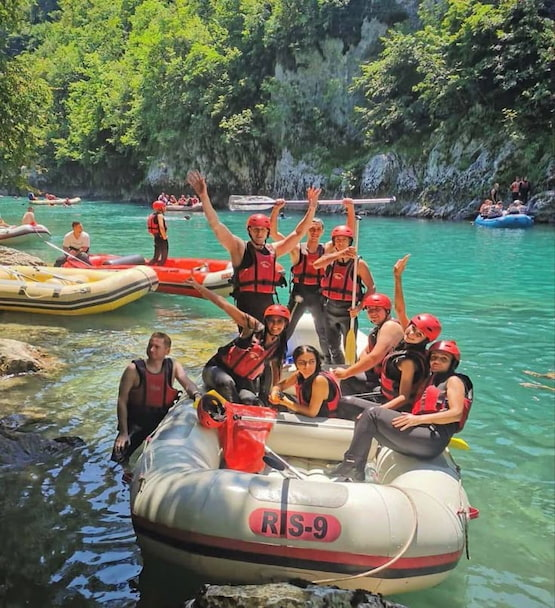
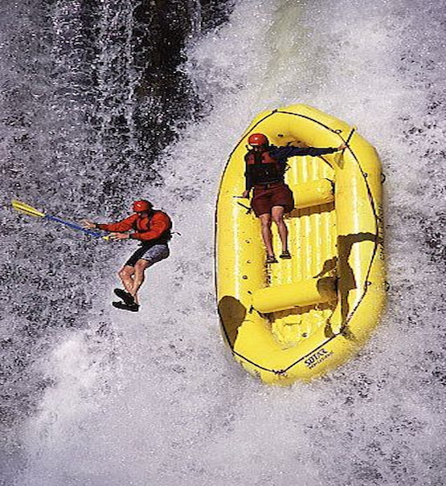
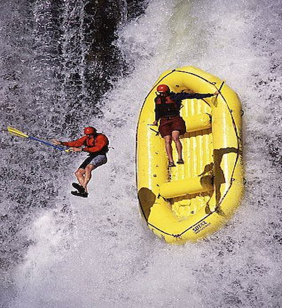

Our most recent trips
 

Here our last crew at the end of our traditional trip, happy and celebrating having completed a trip, apart from beautiful crystal clear water, full of beautiful views and the rapids, which are not few, and they found along the way.
Leni's corridor is so loud that it drowns out everything except the sound of the water and your own breathing. From your seat on the raft, all you see ahead is a white wall, heaving and angry.
Our fall trip screams pure adrenaline. As you can see, the raft is crashing into a powerful waterfall, and a client has been thrown while still holding the paddle. The water explodes everywhere and the raft tilts, showing how intense and unpredictable the river is.
| Our trips | ||||
|---|---|---|---|---|

|

|

|

|

|
| Relax on our "Calm-River Trip" where you can go with the current and enjoy the views, take photo or record a video. | Savor victory or defeat in "Leni's Race."Think, act and win before your opponents. It is a race where fun, speed and water are never lacking | Surrender to the darkness on our "Journey to the Dark Waters" witness its rapids, color and his views. It's an unreal experience. | Immerse yourself in our "Fall Trip", feel the adrenaline in its rapids and try to contain your excitement of the last fall. This isn't a trip for chill people. | Savor the moment on our “Traditional Trip” Where you can enjoy the fear/excitement of the rapids and you will know how to appreciate the calm after the storm. You know, the Traditional Trip. |